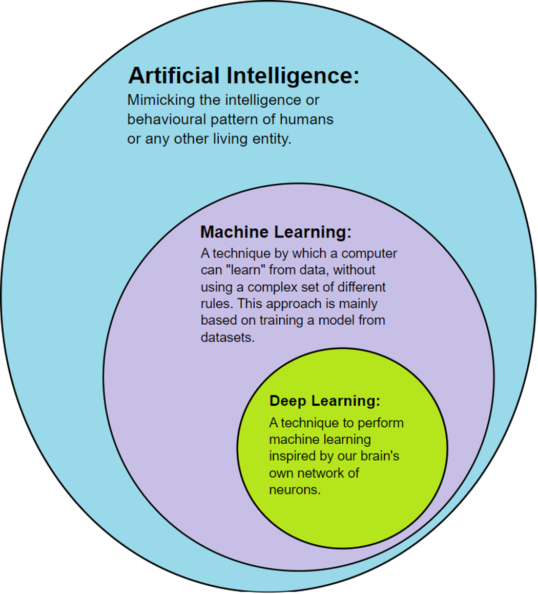
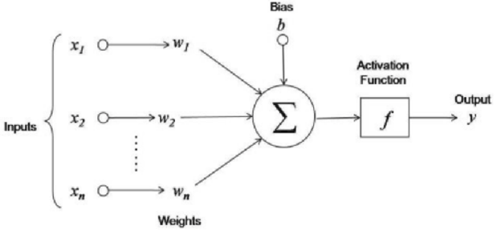
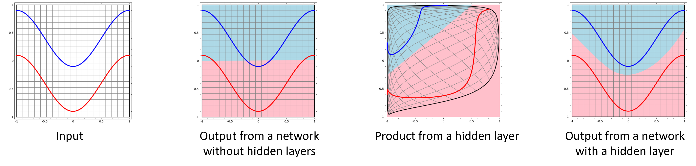
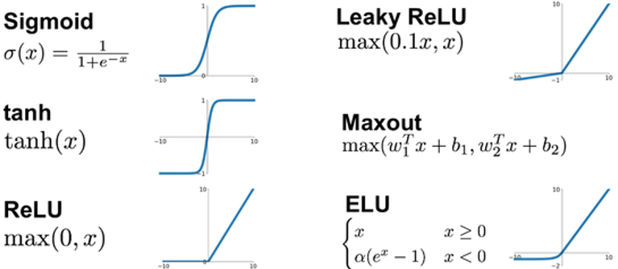
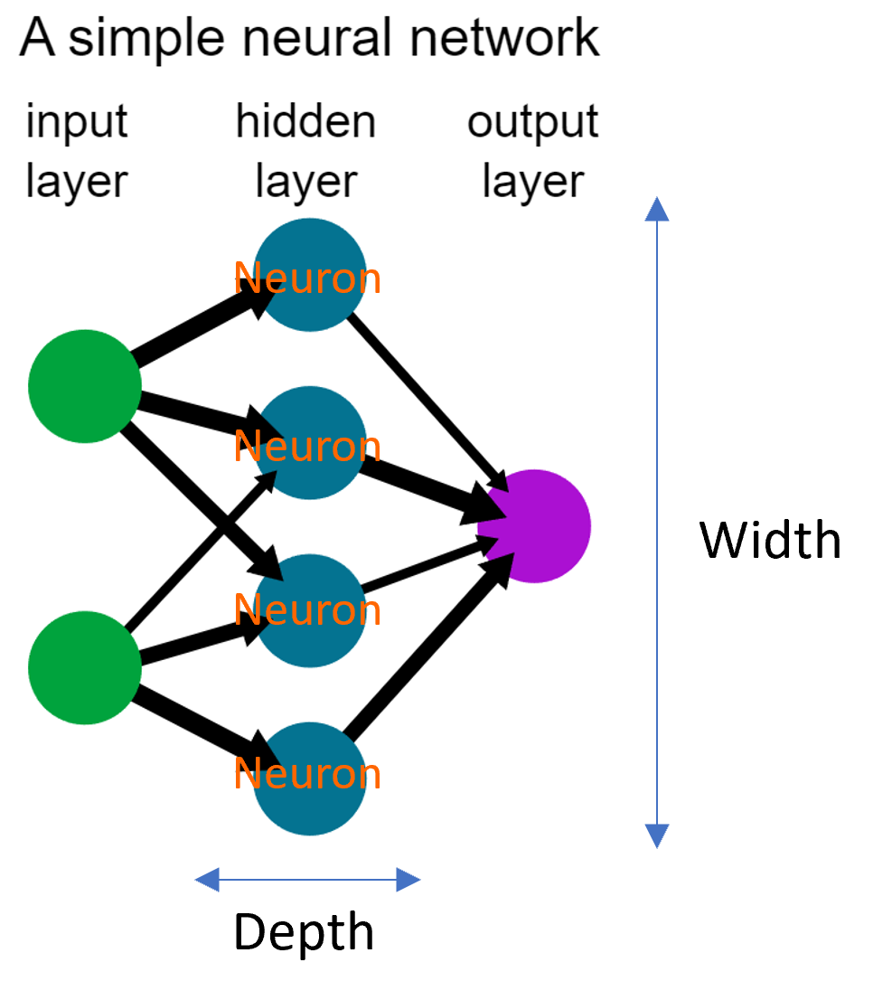

Introduction#
import matplotlib.pyplot as plt
import torch
from torchvision.datasets import KMNIST
from torchvision.transforms import Compose, ToTensor, Lambda
from torch.utils.data import DataLoader
from torchvision.utils import make_grid
from PIL import Image
What is deep learning?#
Deep learning is a class of machine learning algorithms that uses multiple layers to progressively extract higher-level features from the raw input.

Neural networks#
Neural network คือ machine learning model ที่เลียนแบบการทำงานของเซลล์สมองของมนุษย์ มีองค์ประกอบคือ artificial neuron ซึ่งมีโครงสร้างดังนี้

เมื่อส่งข้อมูล input เข้าไปใน neuron ข้อมูลแต่ละ feature จะถูก transformed โดย linear regression จากนั้นนำมารวมกันโดย linear combination แล้วถูก transformed โดย activation function ได้ output ออกมา
Activation function เป็น non-linear function ที่แปลงข้อมูลจนทำให้แบ่งด้วยเส้นตรงได้ หากไม่มี activation function ก็จะทำให้ network เป็นแค่ linear transformation อย่างหนึ่ง

Activation function มีหลายชนิด
Activation function ที่นิยมที่สุดคือ tanh, sigmoid และ ReLU (Rectified Linear Unit)
Activation function บางชนิดต้องใช้ค่าจากหลาย neuron เช่น softmax, maxout

Neural network มี 3 ชั้น ได้แก่
Input layer เป็น layer ที่รับ input เข้าไปใน network
Hidden layer เป็น neuron layer 1 ชั้นขึ้นไป ทำการแปลงข้อมูล ในแต่ละชั้นมีหลาย neuron ที่มี weight ต่างกัน
Output layer เป็น layer ที่ให้ output ของ network ออกมา
Neural network อย่างง่ายที่สุดคือ single-layer network (มี hidden layer 1 ชั้น) ดังภาพ

Universal approximation theorem#
Universal approximation theorem บอกว่า single-layer network จะสามารถประมาณฟังก์ชันตัวแปรเดียวใด ๆ ก็ได้ถ้ามี neuron มากพอ (แต่ไม่สามารถประมาณฟังก์ชันหลายตัวแปรได้) หากต้องการทำให้ network ซับซ้อนขึ้น เราต้องเพิ่ม depth (จำนวน layer)
Google Colab#
Google Colab เป็น Jupyter notebook ที่ให้บริการโดย Google
เราสามารถเข้าถึงไฟล์ใน Google Drive ของเราด้วยคำสั่งต่อไปนี้
from google.colab import drive
drive.mount('/content/gdrive/')
Google Colab ให้บริการ Graphic Processing Unit (GPU) เราสามารถเปลี่ยนจาก CPU เป็น GPU ได้ โดยไปที่ Runtime \(\rightarrow\) Change Runtime Type \(\rightarrow\) Hardware Accelerator \(\rightarrow\) เปลี่ยนจาก CPU เป็น GPU
PyTorch#
Tensor handling#
Function/Attribute/Method |
การทำงาน |
Return |
|---|---|---|
|
สร้าง Tensor จาก list |
|
|
สร้าง Tensor จาก numpy array |
|
|
บอกขนาดของ tensor |
|
|
reshape tensor ให้มีขนาดตามที่กำหนด |
|
|
สร้าง tensor ที่มีค่าของแต่ละสมาชิกถูกสุ่มขึ้นมา |
|
|
เอา dimension ที่มีความยาวเท่ากับ 1 ออก เพื่อให้ tensor มี dimension ลดลง |
|
|
เพิ่ม dimension ตามที่ระบุ โดยที่ dimension นั้นมีความยาวเท่ากับ 1 |
|
Tensor statistics เช่น
<tensor>.mean(),<tensor>.std(),<tensor>.max(),<tensor>.sum()ใส่ค่าให้กับaxisparameter เพื่อคำนวณตามแกนที่กำหนดเท่านั้นTensor linear algebra ใช้
torch.linalgเช่นtorch.linalg.inv(<tensor>)ทำ fast Fourier transform ใช้
torch.fftเช่นtorch.fft.fft(<tensor>)(ทำ 1D transform)torch.fft.fftn(<tensor>)(ทำ nD transform)
Data handling#
เราใช้ torchvision ในการจัดการข้อมูล มี model, dataset, transformation ให้ใช้มากมาย
torchvision.datasets#
Function/Attribute/Method |
การทำงาน |
Return |
|---|---|---|
|
นำเข้า dataset ที่มีใน |
- |
|
สร้าง training set กับ test set จาก dataset ที่มีใน |
- |
|
บอกขนาดของข้อมูล (หากเป็นภาพจะบอกทั้งจำนวนภาพและขนาดของแต่ละภาพ) |
|
|
บอกจำนวนข้อมูล |
|
|
แสดงชื่อ จำนวนข้อมูล ตำแหน่งที่เก็บข้อมูล และเป็น train set หรือไม่ |
- |
|
บอก class ของ dataset |
type |
|
แสดง list ของ attributes/methods ของ dataset |
list |
torchvision.transforms#
Function/Attribute/Method |
การทำงาน |
|---|---|
|
รวมทุก transformation ที่อยากทำ (คล้ายกับการสร้าง pipeline) |
|
แปลงข้อมูล (เช่น ภาพ) เป็น Tensor |
|
แปลง lambda function ที่เราสร้างขึ้นเองเป็น transformation |
|
normalize ข้อมูล |
torchvision.datasets.ImageFolder#
torchvision.datasets.ImageFolder ใช้จัดการ dataset ที่มีโครงสร้างดังนี้
root/class_x/xxx.png
root/class_x/xxy.png
root/class_x/[...]/xxz.png
root/class_y/123.png
root/class_y/nsdf3.png
root/class_y/[...]/asd932_.png
DataLoader#
torch.utils.data.DataLoader() ใช้แบ่งข้อมูลออกเป็น batch มี parameter ที่สำคัญดังนี้
datasetเป็นข้อมูลที่จะเอามาแบ่งเป็น batchbatch_sizeเป็นจำนวนข้อมูลในแต่ละ batchnum_workersเป็นจำนวน subprocess ในการโหลดข้อมูล (เท่ากับ 0 by default) ไม่ต้องสนใจก็ได้shuffleให้บอกว่าต้องการ shuffle ข้อมูลทุก ๆ epoch หรือไม่ (True/False) เป็นการป้องกัน training bias
ใช้ <batch_sample>, <batch_target> = next(iter(<data_loader>)) เพื่อ iterate over the data loader
# Download the KMNIST training and test datasets
train_set = KMNIST(root="../data", train=True, download=True)
test_set = KMNIST(root="../data", train=False, download=True)
train_set
Dataset KMNIST
Number of datapoints: 60000
Root location: ../data
Split: Train
type(train_set)
torchvision.datasets.mnist.KMNIST
dir(train_set)
['__add__',
'__annotations__',
'__class__',
'__class_getitem__',
'__delattr__',
'__dict__',
'__dir__',
'__doc__',
'__eq__',
'__format__',
'__ge__',
'__getattribute__',
'__getitem__',
'__getstate__',
'__gt__',
'__hash__',
'__init__',
'__init_subclass__',
'__le__',
'__len__',
'__lt__',
'__module__',
'__ne__',
'__new__',
'__orig_bases__',
'__parameters__',
'__reduce__',
'__reduce_ex__',
'__repr__',
'__setattr__',
'__sizeof__',
'__slots__',
'__str__',
'__subclasshook__',
'__weakref__',
'_check_exists',
'_check_legacy_exist',
'_format_transform_repr',
'_is_protocol',
'_load_data',
'_load_legacy_data',
'_repr_indent',
'class_to_idx',
'classes',
'data',
'download',
'extra_repr',
'mirrors',
'processed_folder',
'raw_folder',
'resources',
'root',
'target_transform',
'targets',
'test_data',
'test_file',
'test_labels',
'train',
'train_data',
'train_labels',
'training_file',
'transform',
'transforms']
# Dictionary of category:index
class_to_idx = train_set.class_to_idx
class_to_idx
{'o': 0,
'ki': 1,
'su': 2,
'tsu': 3,
'na': 4,
'ha': 5,
'ma': 6,
'ya': 7,
're': 8,
'wo': 9}
# Show the first image of the training set
image, label = train_set[0]
print(type(image))
fig, ax = plt.subplots(figsize=(2, 2))
ax.imshow(image, cmap='gray')
ax.set_title(f"{label} / {list(class_to_idx)[label]}");
<class 'PIL.Image.Image'>
def add_noise(x, alpha=0.1):
return x + alpha*torch.rand_like(x)
# Combine all transformations
transform = Compose([
ToTensor(), # convert images to PyTorch Tensors
Lambda(lambda x: add_noise(x, 0.5)) # add noise to images
])
# Import and transform the downloaded KMNIST training and test datasets
train_set = KMNIST(root="../data", train=True, download=False, transform=transform, target_transform=None)
test_set = KMNIST(root="../data", train=False, download=False, transform=transform, target_transform=None)
print("min:", train_set.data.min().item())
print("max:", train_set.data.max().item())
print("mean: ", torch.mean(train_set.data/255.).item())
print("std: ", torch.std(train_set.data/255.).item())
min: 0
max: 255
mean: 0.19176216423511505
std: 0.3483428359031677
# Show the first image of the new training set
image, label = train_set[0]
print(type(image))
print(image.shape)
fig, ax = plt.subplots(figsize=(2, 2))
ax.imshow(image[0], cmap='gray')
ax.set_title(f"{label} / {list(class_to_idx)[label]}");
<class 'torch.Tensor'>
torch.Size([1, 28, 28])
# Initialise a DataLoader object to create batches of the dataset, each of which has 32 images
train_loader = DataLoader(dataset=train_set, batch_size=32, num_workers=0, shuffle=True)
# Iterate over the data loader
train_batch_samples, train_batch_targets = next(iter(train_loader))
print(train_batch_samples.shape)
print(train_batch_targets.shape)
torch.Size([32, 1, 28, 28])
torch.Size([32])
# Visualise a batch
batch_grid = make_grid(train_batch_samples, nrow=8, padding=3, pad_value=train_batch_samples.max())
fig, ax = plt.subplots(figsize=(10, 5))
ax.imshow(batch_grid[0], cmap="gray")
ax.set(xticks=[], yticks=[])
print(train_batch_targets)
tensor([7, 3, 7, 9, 4, 5, 7, 5, 3, 2, 5, 4, 3, 1, 5, 5, 0, 1, 2, 7, 2, 1, 3, 3,
4, 0, 7, 3, 0, 0, 8, 1])